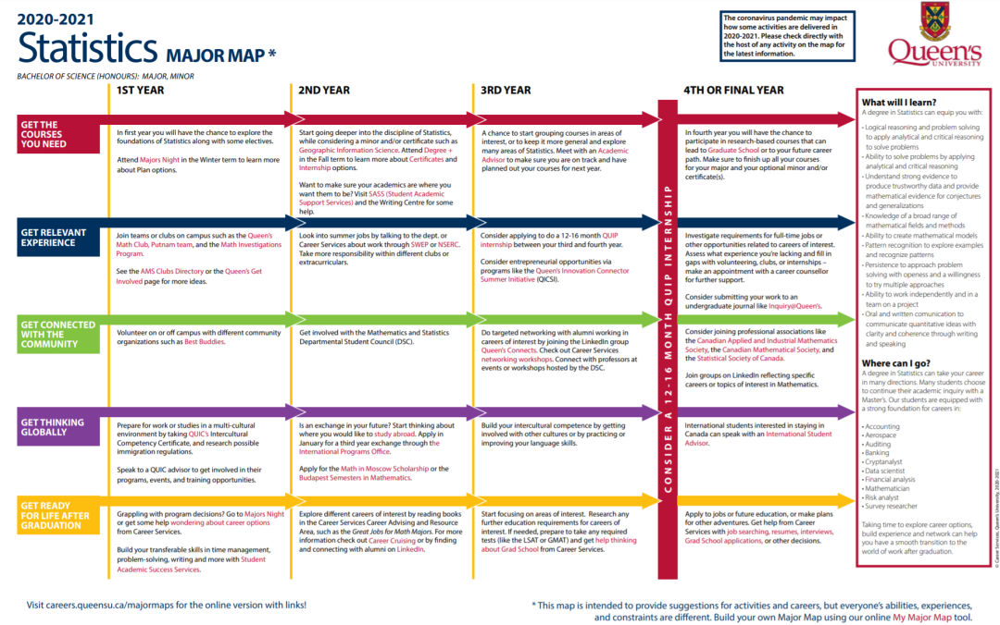

Statistics
统计专业
Queen's统计专业怎么样？
统计难学吗？
在这个大数据的时代，相信有不少学弟学妹们对统计这个大热门专业一定非常感兴趣。那统计究竟怎么样，如何学？千万不要走开，熊猫酱这就来带你细细研究一番！
统计学什么？
统计学是应用数学的一个分支，主要通过利用概率论建立数学模型，收集所观察系统的数据，进行量化的分析、总结，并进而进行推断和预测，为相关决策提供依据和参考。它被广泛的应用在各门学科之上，从物理和社会科学到人文科学，甚至被用来工商业及政府的情报决策之上。在女王大学，为统计学又分了这四个方向：
Algebra & Number Theory
代数与数论
Analysis, Geometry, & Topology
分析，几何和拓扑
Applied Mathematics
应用数学
Probability & Statistics
概率与统计
进专业要求：
总GPA达到0.7，并在MATH 1##课程中获得C或以上的成绩。统计专业路径图如下：

想要选择统计系在大一就需要斟酌一下选课了，熊猫酱也为大家收集整理了统计系的大一必修课和大二及以后的推荐课程。
大一必修
推荐指数：★★★★★
Math 110 （年课）
主要是讲线性代数。今年网课，难度不高。日常难度会比较高，劝退一部分学生（主要在考试），但认真学基本问题不大，A+可能难一些。由作业，考试，期末组成。不同老师有不同的分配。一般这几年G.G.Smith和Ivan教的比较多。（网课不太清楚）
建议就是，课后复习，把不懂的地方尽快搞懂，不要超过一周，不然会跟不上进度。G.G会提供他的notes某种意义上算是一本书，这也导致好多人干脆不去听课，直接看notes（实际上可行，因为G.G的课一般是照着notes读）。Ivan评价两极分化，有的很喜欢，有的不喜欢。他上课一般是想讲什么讲什么有的时候你会觉得课程不连接。但一定要去上，因为不提供notes（不确定明年提不提供，因为据说网课他也交了，好像搞了份notes,但之前没有）
大一必修
推荐指数：★★★★★
Math 120（年课）
主要是讲微积分。
这门课比较简单，没什么好说的，如果是普高生，基本大一上学期的内容高中都学过。老师也一般都很友好，有的老师会考试前给past exam。一般情况下，如果擅长数学，这门课会很轻松，感觉大家总体分数也比较高，A+很多。
这两门课的共同特点就是按部就班，跟着走。作业是每周一次。所以完全可以用作业来衡量你掌握的水平。这两门课也比较基础，很重要。基本后面的课都会用到里面的知识点。
想学统计的可能会在统计和数学中衡量。那就考虑一下自己喜欢的是数据还是理论。喜欢证明的当然选数学。然后大二实际上数学和统计的必修也差不多。所以，选择了如果不喜欢，可以在大三改另一门，一般不耽误。
进系要求小编，但应该很低来着，C还是C-。一般真学数学或统计，那不用考虑进不了系的问题。如果开始分就比较低，会考虑GPA，一般也会早期drop，所以，基本学下来的都进系没问题。
大二推荐课程
推荐指数：★★★★★
math280 math281 stat268 stat269
两门stat都是入门课，讲的内容比较多杂，但本身不难，尤其是268。
280讲的是 Advanced Calculus，基本是120的进阶。
281讲的是Real Analysis，算是比较重要的一门课，后期会讲一点拓扑
然后不是必修但大部分人都会修的是math231,math231讲的是微分方程，math210也会有部分人选择，但证明在这门课中应用较多，不喜欢证明的可以跳过这门课。
结语
统计学专业不是仅仅像其表面的文字表示，只是统计数字，而是包含了调查、收集、分析、预测等，应用的范围十分广泛，因此也要求毕业生掌握扎实的统计基础理论，为未来奠定坚实的基础。但统计专业本身便是一个比较枯燥的专业，但是与此同时，也是一个非常神奇的专业。很多方向，包括工程，物理，金融，等等一系列的学科，都会和大量的数据打交道。当我们可以将问题抽象成数据或模型并将其解决的时候，数理逻辑来思考问题的时候，统计的魅力也就由此显现了。
熊猫酱以为，选择统计学真真就是痛并且快乐着呀！别愣着了，冲就完事儿了！
【更多信息，可以登录数统系官网查看哦~】
https://www.queensu.ca/mathstat/undergraduate/prospective-undergraduate/stats
-END-
文字：Charlotte Rika
排版：RIKA
编辑：RIKA
审核：容易 Olivia